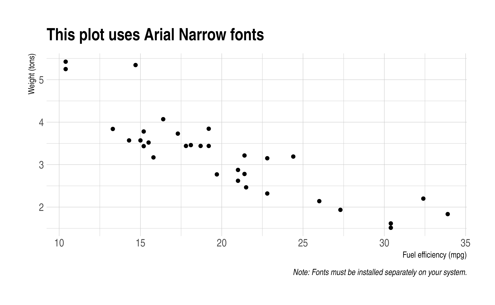

Course title
Lecture title
Your name
University | Course codeSource:
vignettes/lecturenotes/lecturenotes.Rmd
lecturenotes.RmdBefore you begin
This template is for knitting R Markdown documents to both HTML and PDF format. It tries to take care of various inconsistencies between the two formats with minimum effort from the user. Just click “Knit” (in Rstudio) and it will automatically export to both formats. As the name suggests, I predominantly use it for my lecture notes. But I find that it works well for writing papers too.
See the package README for a longer description, as well as potential gotchas and limitations (e.g. font support for different LaTeX engines).
Template features
Here are some examples of features not available in vanilla R Markdown and how to use them.
Multi-column environments
Multi-column environments are supported via’s Pandoc’s fenced_divs syntax and some preamble sugar (bundled together with the template). For example, a two-column section would look like this.
Here is some example dplyr code.
## # A tibble: 2 × 2
## am `mean(mpg)`
## <dbl> <dbl>
## 1 0 17.1
## 2 1 24.4
And the data.table equivalent.
library(data.table)
mtcars_dt = as.data.table(mtcars)
mtcars_dt[, mean(mpg), by = am] ## am V1
## <num> <num>
## 1: 1 24.39231
## 2: 0 17.14737
The same idea can be extended to additional columns and the individual column widths are also adjustable.
Regression tables
I have fairly strong preferences about how regression tables should look (threeparttable FTW). Luckily, the fantastic modelsummary package has us covered for nice looking regression tables, particularly since it automatically supports different Rmd output formats and backends. (For example, via the equally excellent kableExtra package.) This makes it easy to produce regression tables that look good in both HTML and PDF… although the latter requires that the corresponding LaTeX packages be loaded first. This template loads those LaTeX packages automatically, so tables like the below Just WorkTM.
library(fixest) ## For quick multi-model regression object
mods = feols(c(mpg, hp) ~ disp + csw(wt, drat) | cyl + vs, data = mtcars)
library(modelsummary)
library(kableExtra)
msummary(
mods,
title = "fixest: multi-model estimation",
stars = TRUE,
gof_omit = "Adj|Pseudo|Log|AIC|BIC"
) %>%
add_footnote(
c(paste("This footnote is pretty long. In fact, it runs over several lines",
"of standard PDF output. Luckily that's no problem thanks to",
"modelsummary, kableExtra, and threeparttable. As an aside, the",
"fixest package is also amazing and you should use it."),
"A shorter note."),
threeparttable = TRUE
) %>%
kable_styling(latex_options = "hold_position") ## (Optional) Print table directly below code| mpg | mpg | hp | hp | |
|---|---|---|---|---|
| disp | 0.002 | 0.002 | 0.104 | 0.126+ |
| (0.005) | (0.005) | (0.117) | (0.031) | |
| wt | −3.403 | −3.397 | −3.502 | 2.863 |
| (1.331) | (1.168) | (8.289) | (6.026) | |
| drat | 0.038 | 37.781 | ||
| (1.223) | (44.566) | |||
| Num.Obs. | 32 | 32 | 32 | 32 |
| R2 | 0.839 | 0.839 | 0.721 | 0.756 |
| R2 Within | 0.396 | 0.396 | 0.012 | 0.138 |
| Std.Errors | by: cyl | by: cyl | by: cyl | by: cyl |
| FE: cyl | X | X | X | X |
| FE: vs | X | X | X | X |
| a This footnote is pretty long. In fact, it runs over several lines of standard PDF output. Luckily that’s no problem thanks to modelsummary, kableExtra, and threeparttable. As an aside, the fixest package is also amazing and you should use it. | ||||
| b A shorter note. | ||||
| + p < 0.1, * p < 0.05, ** p < 0.01, *** p < 0.001 |
PDF support for non-standard fonts
This is an easy one; simply a matter of adding dev: cairo_pdf to the YAML. But it’s nice not having to remember that every time, no?
Note: As the figure caption suggests, to run this next chunk you’ll need to add Arial Narrow to your font book if it’s not installed on your system already.
library(ggplot2)
library(hrbrthemes)
ggplot(mtcars, aes(mpg, wt)) +
geom_point() +
labs(x = "Fuel efficiency (mpg)", y = "Weight (tons)",
title = "This plot uses Arial Narrow fonts",
caption = "Note: Fonts must be installed separately on your system.") +
theme_ipsum()
Ignore interactive content when exporting to PDF
In general, this template tries to do a good job of automatically handling (i.e. ignoring) interactive content when exporting to PDF. A notable exception is with embedded interactive content like external GIFs. In this case, rather than typing the usual, say,  directly in the Rmd file, you should include the figure with knitr::include_graphics in an R chunk. This will allow you to control whether it renders, conditional on output format. For example, the following chunk will render an actual GIF when the knit target is HTML format, versus a message when that target is PDF format.